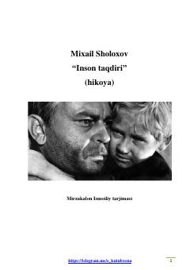

ITUrush ko'rgan oddiy insonning taqdiri va bardoshi haqida qissa.
Mixail Sholoxovning 'Inson taqdiri' asari urushdan keyingi birinchi bahorda Yuqori Don bo'ylarida kechgan voqealarni tasvirlaydi. Asarda urush ko'rgan oddiy bir kishining og'ir hayot yo'li va insoniy bardoshi hikoya qilinadi. Bu kichik hajmli, lekin chuqur ma'noli asar rus adabiyotining durdonalaridan biri hisoblanadi.